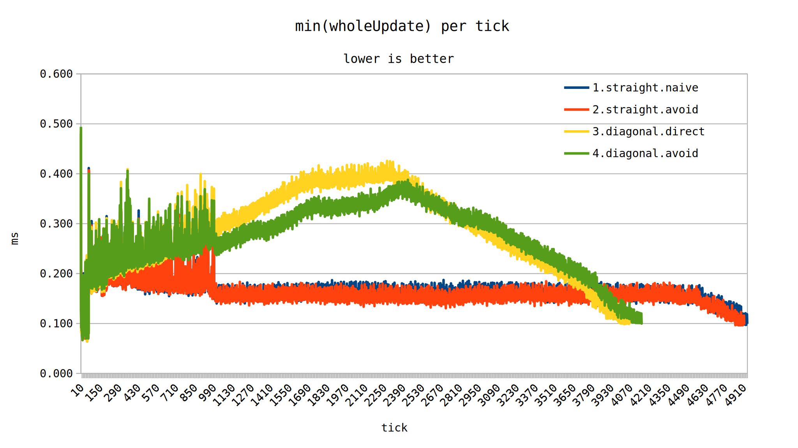
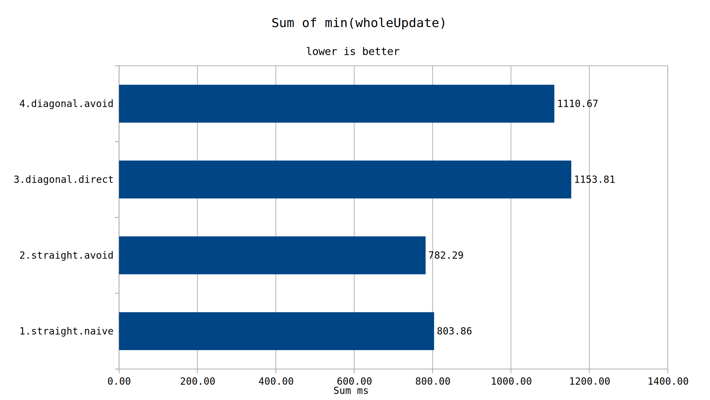
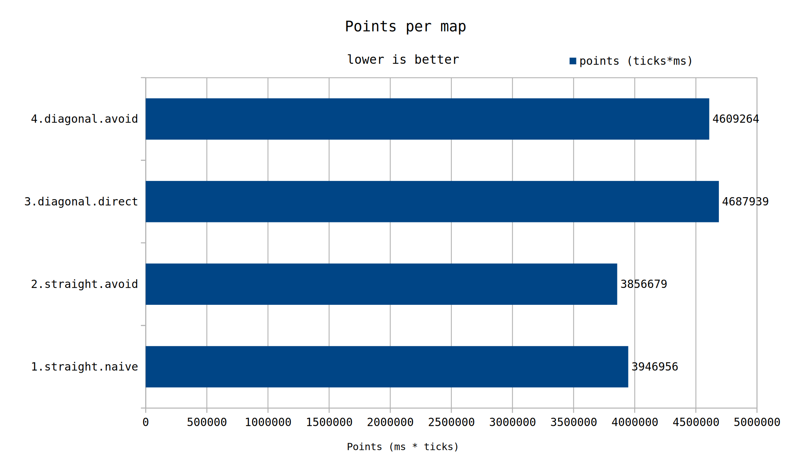
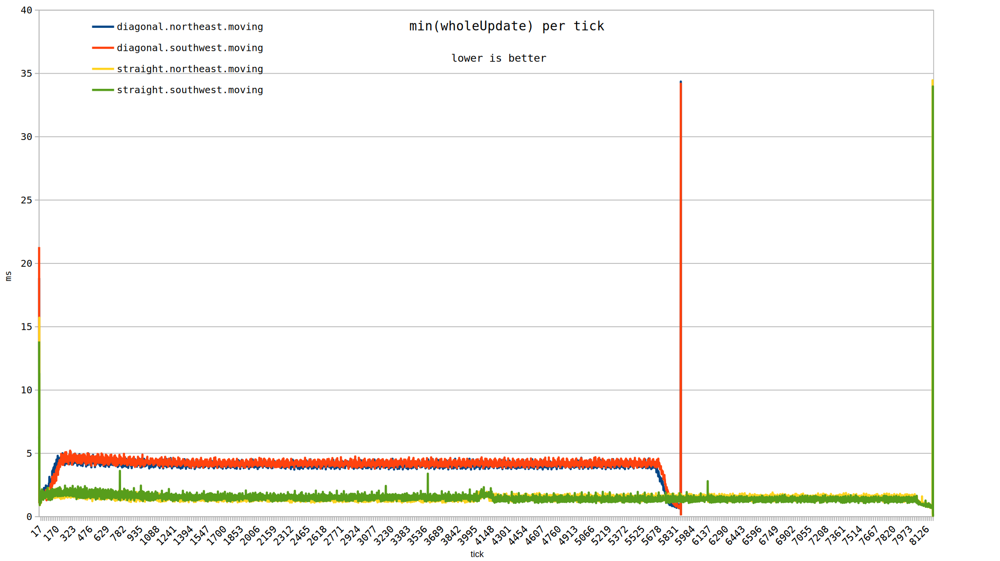
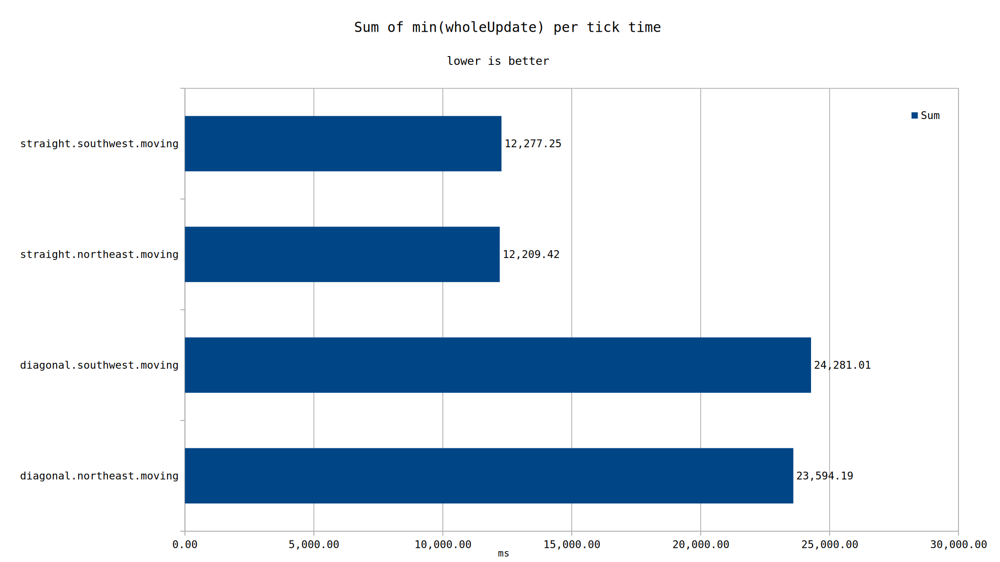

Diagonal trains still perform worse than their straight counterparts. It was also determined that diverting to avoid ore patches is a worthwhile optimization, albeit at a smaller gain than avoiding diagonals.
Unexpectedly, the northern direction of travel no longer seems to be advantageous to travel in. Previously a 7% difference was observed, now it was measured at 0.5%.
Previously, we explored the UPS cost of diagonal trains in test-000026. In that test, we found that diagonal trains were worse UPS wise even when accounting for their shorter path.
As a recap, diagonal trains have their AABB (Axis Aligned Bounding Box) rest on either 9 or 12 advanced tiles. As the train moves, it has to check that many advanced tiles to potentially collide with anything in them.
Added sometime after 0.16.51, the show-selected-entity-advanced-tiles
debug option found in the F4 menu allows for easy visualization of the
advanced tiles occupied by an entity at any one time. The figure below shows
the 12 advanced tiles that are presently occupied. Depending on the precise
position of the locomotive along the rail, either 9 or 12 advanced tiles
will be occupied at any one time.
This is in contrast to straight locomotives, where only 3 or 4 advanced tiles are occupied at the same time.
Compared to the last time we tested this, a number of factors might have changed the results. These are as follows:
This time around, a new test map has been generated with the following settings
By including ore, we can more effectively test avoiding patches along the path.
We quickly set up 4 possible paths for a train to travel. Due to random chance, not all paths have identical amounts of ore underneath. If the results are close, we should take results with a healthy amount of salt.
In the interest of simplifying the test, we instead swap out the multiple train setup of the previous test for 1 really long train. The train has 102 locomotives and 206 cargo wagons.
Matching to the paths above:
Note that a significant portion of the time is spent leaving/arriving to the station portion of the journey. These portions are identical between contenders, but it does mean we can't actually use the sqrt(2) rule directly when comparing results.
In this test, we will also revist the maps tested previously, testing for the same tick durations specified there.
All maps will be ran 10 times, and the best performing tick per run per tick will be taken as the "idealized" measurement.
The saves for this test are available with factorio-benchmark-helper. Their download links can be obtained from the master.json file https://github.com/mulark/factorio-benchmark-helper/blob/master/master.json
First, let's take a look at the 4 paths on the new map.

Visually, it looks like the straight rails have a clear advantage.
Next, taking a look at the sum of the previous graph, we can see that straight rails took significantly less time to update. But this is not a perfect metric, as it ignores the time in ticks it took for the train's journey.

To account for the journey, we can multiply the time taken in ms by the number of ticks needed to achieve that journey. We can call these "Points", and fewer is better.

When accounting for the longer travel duration, we still see that the straight paths clearly beat the diagonal ones. Additionally, it's clear that diverting to avoid ore is advantageous.
Moving gears to the maps from test-000026, we start off with the min(wholeUpdate) per tick once again.

Then, looking at the sum time taken by the previous ticks.

We can see that the straight case took ~1/2 the time to update from beginning to end. The straight rails took 40% more ticks to achieve that, but it's improbable that scaling up the straight rail case by 40% would result in 100% more performance cost.
One thing of curiosity is that there no longer seems to be an advantage for the north (orientation 0) case. The train travelling northeast was 0.5% faster than the southwest one, well within the margin of error.
Diagonal trains have a greater cost than their straight railed counterparts. They should be avoided where possible.
Avoiding ore patches is ideal, but it should be done with straight rails as much as possible. It's possible that some edge cases might result in superior performance to go diagonal to avoid ore patches. But those ought to be extreme edge cases.
The northern direction no longer appears to have a significant advantage compared to the other cardinal directions.